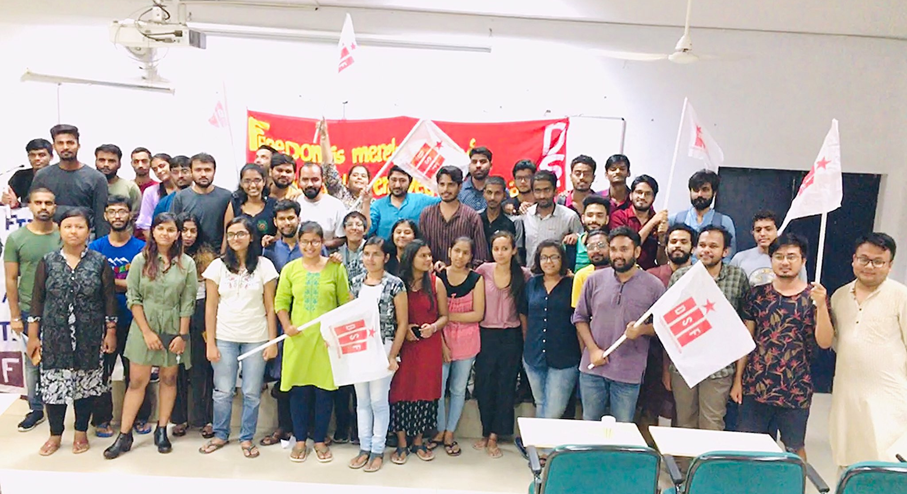

About DSF
The DSF is an independent left-wing students' organisation formed in 2012-13 after a long and thorough debate regarding the direction of the left movement in India and the role of the autonomy of the student movement in the same. The DSF believes that the student movement must be autonomous and independent and should create a space for democratic and bottom-up discussion where the imagination and ideals of the student movement are not compromised by the electoral calculations of political parties beyond the university space. DSF is the longest running autonomous student organisation in JNU.
DSF seeks to strengthen the progressive and democratic students' movement across the country based on independent and principled positions on the issues confronting the student community. We stand for building solidarities with all other left and progressive forces outside university campuses to strengthen the broader democratic movement, while maintaining our autonomous character. Since its very inception, DSF has stood opposed to the neoliberal push towards the enrichment of wealth and power into the hands of the few at the cost of the working masses. The Democratic Students' Federation draws inspiration from the movements of the working masses across the world against the capitalist system of exploitation and believes that global capitalism in its current neo-liberal variant has reached a stage where it cannot coexist with any democratic setup where the ideals of political, economic, and social justice can become a reality. A better future can be built only through mass movements built on broad solidarities across economically and socially marginalised groups.
DSF staunchly believes that secularism is not a mere ideal, but a necessary precursor to any democratic process. Thus, the RSS-BJP's communal Hindutva nationalism is the biggest threat to our democracy today. We also believe that the basic hallmark of being progressive in India today is to be uncompromisingly opposed to the institutions of caste and patriarchy. And as such we draw inspiration and lessons from the history of the anti-caste struggles and the movements against patriarchy. We consider the right-wing, communal and reactionary ideology of the RSS-BJP-ABVP as the most dangerous threat to democracy and socio-economic progress.
DSF identifies the socio-economic and environmental challenges as structural and inter-linked to global capitalism, which places profit over people. Therefore, we believe that only a peoples' solidarity can build a better world that egalitarian and ensures social justice. We believe that only an alternative economic system that place PEOPLE & ENVIRONMENT OVER PROFIT can be the answer.